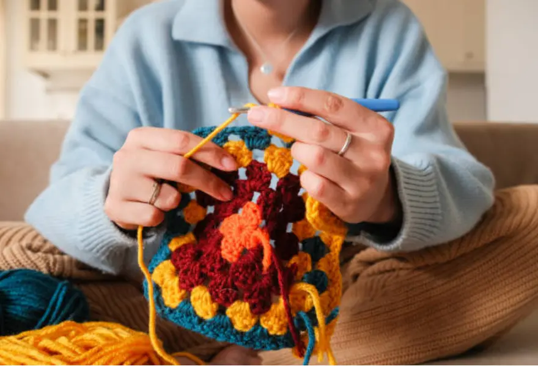

What is Crochet?
Crochet is a craft that uses yarn and a hook to create fabric. It is relaxing, creative, and allows you to make beautiful handmade items.
Benefits of Crochet
History of Crochet
Crochet originated in Europe in the 19th century and has become a worldwide craft. It connects tradition with creativity and continues to inspire makers today.
Why Crochet Matters Today
In a fast-paced world, crochet offers mindfulness and sustainability. Handmade items reduce waste and bring joy to both the maker and the receiver.